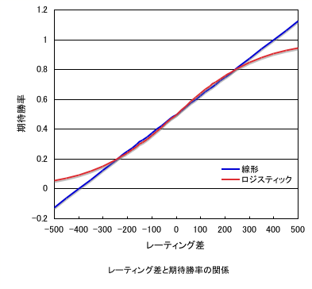

レーティングとは、プレイヤーの実力をあらわす点数のことです。
FIBSでは、レーティングの計算方法が解説されています。その解説によれば、FIBSでは以下のようにレーティングが計算されます。
まずは、期待勝率が以下のように計算されます。
$$E = 1 - \frac{1}{10^{\frac{D\sqrt{N}}{2000}} + 1}$$ ただし、 E: 期待勝率, D: レーティングの差 (自分 - 相手), N: マッチの長さそして、K (Match value) が\(K = 4\sqrt{N}\)から計算されます。このようにして求めれたEとKから、レート変動が以下のように計算されます。
経験値が400になるまでの間は、さらに以下の補正が行われます。
これは、Kの値に 5 - (試合終了時の経験値/100) をかけても同じことです。
例えば、自分のレートが1500、相手のレートが1700で、5ポイントマッチをして勝ったとします。まず、経験値が400以上の場合には、D=-200, N=5より $$E = 1 - \frac{1}{10^{\frac{-200\sqrt{5}}{2000}} + 1} = 0.374$$ となり、レート上昇は $$K(1-E) = 4\sqrt{5}(1-0.374) = 3.35$$ つまり、試合後のレートは1503.35となります。ここで、経験値が0だった場合には、試合後の経験値が5になるので、5-5/100 = 4.95倍のレート変動、つまり 3.35 * 4.95 = 16.58 のレート変動となります。
このFIBSのレーティングの式は、「期待勝率がレーティング差のロジスティック曲線によって表される」というチェスのイロレーティングを元にしています。
日本バックギャモン協会においても、同様の計算方法が採用されています。ただし、\(K = 4\sqrt{N}\)ではなくて\(K=N\)であり、経験値が少ない場合のKの補正はありません。ネット対戦ができるサイトではレーティングシステムが採用されていることが多いですが、その式は必ずしもFIBSの式と一致しているとは限りません。
3種類のボードゲームについて、レーティング計算方法の比較表を作成しました。
| ゲーム | 場所 | 期待勝率の関数形 | 関数のパラメータ |
| バックギャモン | FIBS | ロジスティック1) | \(a=2000/\sqrt{N}\), \(K=4\sqrt{N}\) |
| チェス | FIDE | ロジスティック1) | a=400, K=10〜40 |
| 将棋 | 将棋倶楽部24 | 線形2) | a=400, K=32 |
このように、レートの計算には期待勝率がレーティング差のロジスティック関数であらわされるという計算法と、線形であらわされるという計算があります。そこで、ロジスティック関数と線形関数において、a=400とした計算を比較してみました。
線形関数については、レーティング差が400を超えると、期待勝率が0から1の間におさまらなくなります。そこで、線形関数を採用する場合には、それ以上のレート差の戦いは無効であるとする必要があります。期待勝率が2割から8割の間、つまりレート差が240以内の間では、線形とロジスティックは非常に似通った関数形を示すのに対し、レート差が240以上になると、両者の差が開きます。したがって、期待勝率として線形関数を採用している場合には、このグラフの場合はレート差が400付近の相手と戦う場合に、レート上位者がかなり「損をする」といった現象が生じます。